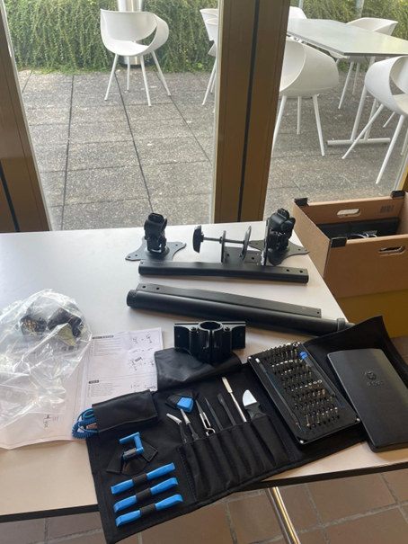
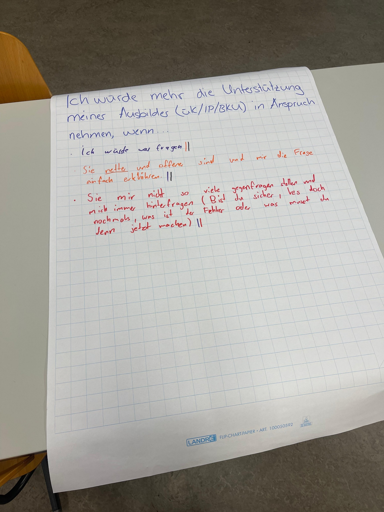

Willkommen auf der offiziellen Plattform der IMS-T an der GBS St. Gallen. Diese Seite dokumentiert die Meilensteine, vielseitigen Projekte und persönlichen Highlights unseres Lehrjahres. Sie bietet einen direkten Einblick in unsere praxisnahe Ausbildung an der Schnittstelle von Informatik und technischer Vertiefung. Begleiten Sie uns auf unserem Weg zu den IT-Professionals von morgen und entdecken Sie die Kompetenzen, die wir im Laufe unserer Schulzeit 2025/26 erworben und vertieft haben.

Um das neue IMS-T-Team herzlich willkommen zu weissen, haben wir ein gemeinsames Spiel organisiert, das perfekt als Eisbrecher diente. Im Jahr 2025 entschieden wir uns für ein Escape Game unter freiem Himmel, bei dem wir quer durch die Stadt zogen und knifflige Rätsel lösen mussten. Damit das Kennenlernen optimal funktionierte, wurden wir in bunt gemischte Gruppen aus neuen und erfahrenen IMS-T-Mitgliedern aufgeteilt. Durch das gemeinsame Rätselraten kamen wir sofort ungezwungen ins Gespräch, konnten uns austauschen und neue Kontakte innerhalb des Teams knüpfen.

Zum Start hat sich die IMST25-Klasse direkt die Schraubenzieher geschnappt und ihre PC-Arbeitsplätze selbst aufgebaut! Nachdem zuerst in der Theorie genau gecheckt wurde, welches Kabel welche Aufgabe hat und wo es hingehört, ging es an die Praxis. Der ganze 5. Stock verwandelte sich in eine Tech-Werkstatt: Überall wurden Kartons ausgepackt, Monitore geschleppt und Kabel unter den Tischen verlegt. Das Geniale dabei: Jede und jeder konnte im ganz eigenen Tempo tüfteln und das Setup fertigstellen. Wer mal kurz nicht weiterwusste, bekam unkompliziert Hilfe vom Sitznachbarn. Am Ende hatte die Klasse den Dreh raus, alle Bildschirme liefen und das erste perfekte Fundament für die IT-Ausbildung steht bereit!
Uns wurde mitgeteilt, dass wir im Januar einen Workshop zu Git und Markdown halten würden. Durch unser Lernjournal, einen kurzen Workshop mit unserem Berufsbildner Ueli und durch «Learn Git Branching» – eine Webseite, auf der man lernt, wie die Versionsverwaltung mit Git funktioniert – waren wir mit diesen Themen schon in Berührung gekommen. Daraufhin haben wir angefangen, den Workshop-Tag zu planen. Später fand auch unser erstes Meeting mit dem Auftraggeber statt.

Im Oktober haben wir einen Selbstbeurteilungsauftrag durchgeführt. Auf Plakaten reflektierten wir über Leistungsfaktoren und beantworteten Leitfragen wie: „Beim BKU würde es mir helfen, wenn…“ oder „Was mich am Tempo überfordert, ist…“. Dieser Auftrag verdeutlichte den schwierigen Systemwechsel von der Oberstufe in die Berufswelt. In der Schule waren wir es gewohnt, dass Lehrpersonen fast alles für uns übernehmen: Sie strukturieren den Alltag, erinnern an Deadlines und fangen uns bei Überforderung sofort auf. Diesen Wechsel hin zur geforderten Eigenverantwortung und Selbstorganisation im Lehrbetrieb zu bewältigen, fällt den meisten anfangs schwer. Als Werkzeug für diesen Wandel stellten uns Pascal und Ueli das Modell „The 7 Habits of Highly Effective People“ von Stephen Covey vor, welches das Leben in drei Kreise unterteilt:
• Circle of Control (Kreis der Kontrolle): Dinge, die wir direkt selbst steuern (das eigene Verhalten und die eigene Einstellung).
• Circle of Influence (Kreis des Einflusses): Dinge, die wir nicht kontrollieren, aber durch proaktives Handeln positiv beeinflussen können (z.B. das BKU-Tempo durch aktives Nachfragen).
• Circle of Concern (Kreis der Besorgnis): Dinge, die uns zwar beschäftigen, auf die wir aber absolut keinen Einfluss haben (z.B. starre Rahmenbedingungen).
Erfolgreiche Menschen denken „von innen nach aussen“. Sie verharren nicht in einer reaktiven Opferrolle im Circle of Concern, sondern fokussieren sich auf ihren Circle of Control und Influence. Statt über den neuen Alltag im Lehrbetrieb zu jammern, fragen sie sich proaktiv: „Was kann ich an mir selbst kontrollieren?“ und „Wie kann ich die Situation positiv beeinflussen?“
Wer im IMS-T-Team seinen Laptop unbewacht und entsperrt stehen lässt, geht ein hohes Risiko ein – das ist unsere goldene Regel! Die Aktion hat nämlich einen ernsten Hintergrund: Die Tradition des „Kuchen-Termins“ soll uns Lernende spielerisch daran gewöhnen, wie man sich später im echten Betrieb verhält. Dort arbeiten wir mit hochsensiblen und wichtigen Daten auf unseren Geräten, die auf gar keinen Fall geleakt werden dürfen. Wer also vergisst, seinen Laptop zu sperren, muss mit den leckeren Konsequenzen leben: Jede und jeder darf dann an den offenen Laptop gehen und klammheimlich einen Kuchentermin im Kalender eintragen. An diesem Datum muss das „Opfer“ dann Kuchen für das gesamte IMS-T-Team mitbringen. Im November hat es wieder jemanden erwischt, doch der fällige Denkzettel fiel diesmal besonders kreativ aus. Statt eines gewöhnlichen Schokokuchens gab es ein echtes Meisterwerk (wie auf dem Foto zu sehen ist): Ein herzförmiger Erdbeerkuchen, verziert mit dem aufgedruckten Gesicht unseres Berufsbildners Ueli! Das ganze Team bedankt sich für die süsse Lehre und zieht als Fazit: Win-Win für alle – und das nächste Mal wird ganz sicher Win + L gedrückt.